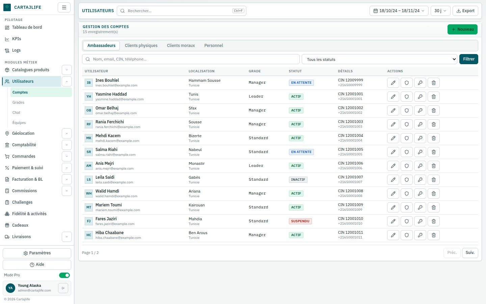
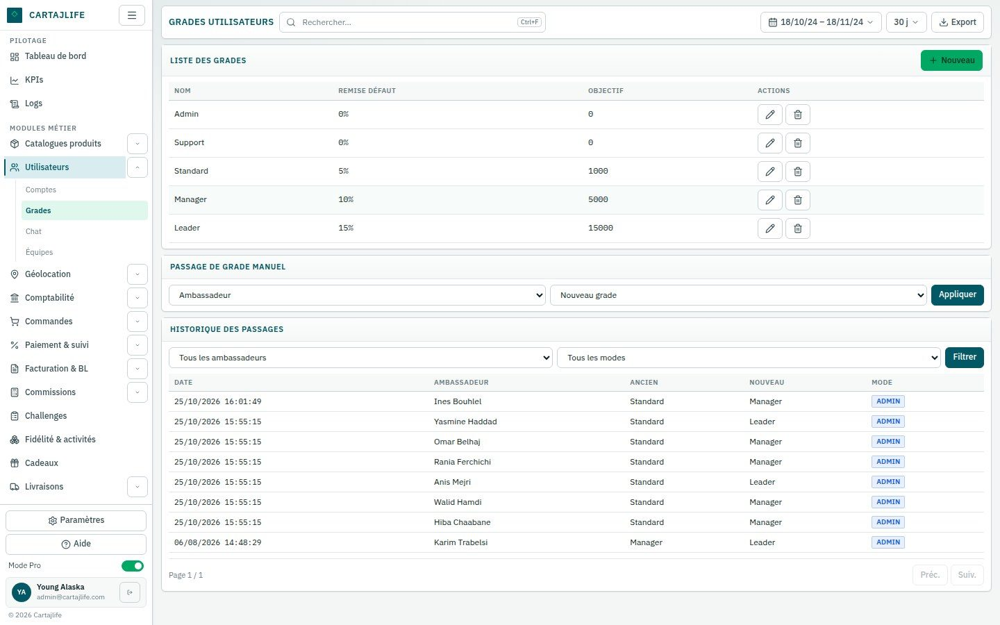
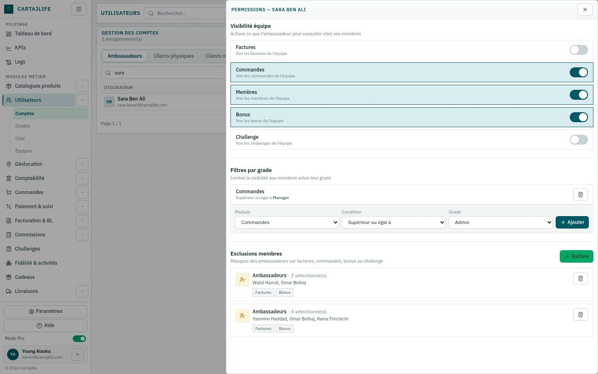
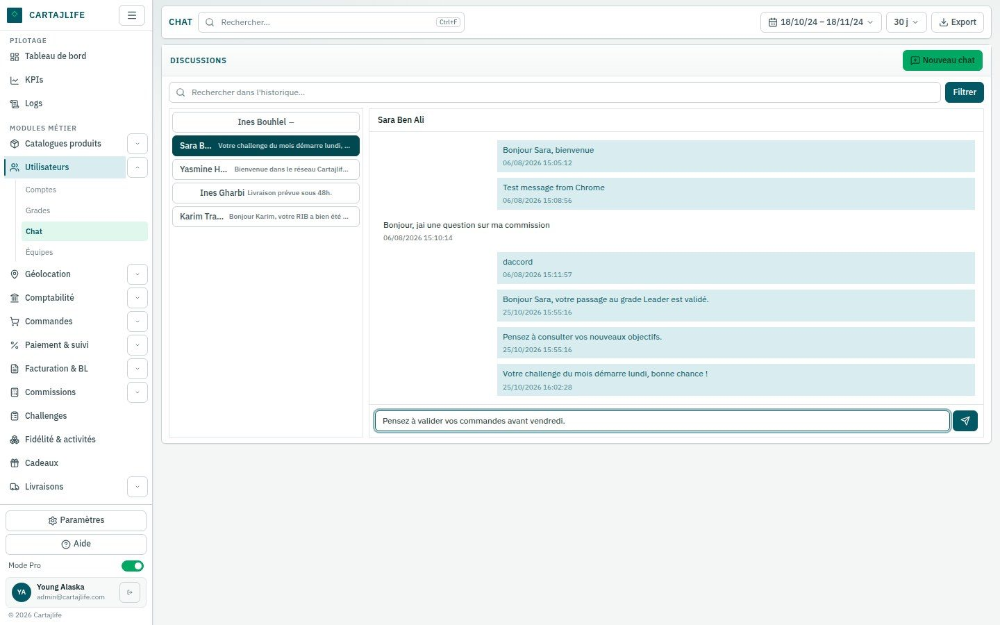

Le back-office utilisé par l'équipe pour piloter un réseau de fidélité et d'ambassadeurs : comptes membres, grades, permissions, messagerie avec les membres, référentiels et journal d'activité complet, dans une seule application web.
4types de comptes gérés
3niveaux de grade ambassadeur
4actions autorisables par module
3niveaux de localisation : pays, gouvernorat, ville
En bref
Cartajlife anime un réseau d'ambassadeurs qui vendent des produits et parrainent de nouveaux membres. En atteignant leurs objectifs de vente, les ambassadeurs progressent sur une échelle de grades (Standard, Manager, Leader), chacun associé à une remise par défaut. Les clients peuvent être des particuliers ou des entreprises.
Cartajlife Admin est le back-office web avec lequel l'équipe gère ce réseau au quotidien : création et mise à jour des comptes, promotion des ambassadeurs, droits de chacun, échanges avec les membres et consultation de tout ce qui s'est passé dans le système.
Pour qui
Administrateurs du réseau
Gèrent tous les comptes, paramètrent les grades et les promotions, et décident de ce que le personnel et les ambassadeurs peuvent voir ou modifier.
Équipe support et opérations
Recherchent les membres, leur répondent via la messagerie intégrée et tiennent à jour les données personnelles et bancaires, dans la limite de leurs droits.
Responsables et contrôle
Suivent qui a fait quoi et quand grâce à un journal d'activité filtrable couvrant les connexions et chaque modification.
Le besoin
Des comptes très différents
Ambassadeurs, clients particuliers, clients entreprises et personnel n'ont pas besoin des mêmes informations. Le back-office les réunit, avec des formulaires qui s'adaptent à chaque type.
Qui voit quoi
Dans un réseau de vente, la visibilité compte : un ambassadeur ne doit voir que les données d'équipe auxquelles il a droit, et chaque membre du personnel seulement les actions prévues par son rôle.
La traçabilité
Les changements de grade, les modifications et les suppressions doivent pouvoir être expliqués plus tard. Chaque connexion et chaque changement sont enregistrés automatiquement.
Fonctionnalités principales
Gestion des comptes
Ambassadeurs, clients particuliers, clients entreprises et personnel dans des onglets séparés, avec recherche par nom, e-mail, numéro de CIN ou téléphone, filtre par statut et pagination.
Formulaires adaptés
Coordonnées bancaires pour les ambassadeurs, raison sociale et matricule fiscal pour les entreprises, et un choix pays, gouvernorat puis ville qui se précise au fil de la saisie.
Grades et promotions
Grades avec remise par défaut et objectif de vente, passage de grade manuel d'un ambassadeur et historique complet des passages, filtrable par ambassadeur ou par mode.
Règles de visibilité des ambassadeurs
Interrupteurs par ambassadeur pour les données d'équipe visibles (factures, commandes, membres, bonus, challenges), filtres selon le grade des membres et exclusion de membres précis.
Permissions du personnel
Pour chaque module, un membre du personnel peut être autorisé à créer, consulter, modifier ou supprimer. Toute action hors de ces droits est refusée avec un message clair.
Messagerie avec les membres
Conversations entre le back-office et les membres, avec le dernier message dans la liste, une recherche pour démarrer un échange et un filtre sur les conversations.
Référentiel géographique
Pays, gouvernorats et villes gérés sur trois niveaux liés, avec les 24 gouvernorats tunisiens et leurs villes déjà chargés.
Référentiel des banques
La liste des banques utilisées pour les coordonnées bancaires des ambassadeurs, sans doublons et protégée contre la suppression d'une banque encore utilisée.
Journal d'activité
Chaque connexion et chaque création, modification ou suppression est enregistrée et peut être filtrée par module, action, type d'utilisateur et période.
Utilisable sur mobile
Tout le back-office s'adapte aux petits écrans, avec un menu de navigation coulissant.
Comment ça fonctionne
Un membre du personnel se connecte
Seuls les comptes du personnel ont accès au back-office ; ambassadeurs et clients sont refusés, et la session se renouvelle discrètement pendant le travail.
Les droits sont appliqués
Chaque demande est vérifiée selon les permissions de la personne sur le module concerné : elle ne peut créer, consulter, modifier ou supprimer que ce qui lui a été accordé.
L'équipe gère le réseau
Comptes, grades, règles de visibilité, localisations et banques se modifient via des formulaires qui vérifient les données avant de les enregistrer.
Elle échange avec les membres
La messagerie conserve chaque conversation et son historique, pour que tout suivi reparte du contexte complet.
Tout est tracé
Chaque changement est inscrit au journal d'activité, consultable ensuite à l'aide de filtres.
Technologies
Interface
Next.js et ReactConstruisent les écrans du back-office, la navigation et les panneaux latéraux.
TypeScriptUtilisé côté interface et côté serveur pour garder des données cohérentes.
Tailwind CSSDonne le style visuel et la mise en page adaptée aux téléphones.
Serveur et API
Node.js et ExpressFournissent l'API REST appelée par le back-office pour chaque action.
ZodVérifie chaque formulaire et chaque requête avant l'enregistrement des données.
Données
MySQLStocke les comptes, permissions, grades, promotions, localisations, banques et le journal d'activité.
MongoDBStocke les conversations et les messages de la messagerie.
Docker ComposeLance les deux bases de données ensemble pour le travail en local.
Sécurité
Sessions JWTJetons de connexion de courte durée, renouvelés automatiquement via un cookie protégé.
bcryptLes mots de passe ne sont conservés que sous forme hachée.
Contrôle d'accès par rôleRéserve le back-office au personnel et applique les permissions par module à chaque requête.
Aperçu

Comptes : ambassadeurs avec localisation, grade et statut

Grades, passage manuel et historique des passages

Règles de visibilité, filtres par grade et exclusions d'un ambassadeur

Messagerie entre le back-office et un membre
Ce que ça apporte
Un seul outil pour le réseau
Comptes, grades, règles, conversations et référentiels se gèrent depuis un back-office unique.
Un accès maîtrisé
Chaque membre du personnel et chaque ambassadeur ne voit et ne fait que ce à quoi il a droit.
Un historique clair
Promotions et modifications sont enregistrées : chaque décision peut être retracée jusqu'à son auteur et sa date.
Des données cohérentes
Des listes communes pour les localisations et les banques, et des contrôles sur chaque formulaire, gardent les fiches membres propres.